GUI Manual
To run swift GUI interface, useswift.py script.
cd path/to/swift/
./swift.py
LAYOUT
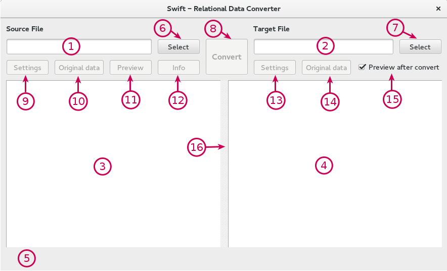
UI Elements
- 1 - Source file text box
-
Write or select (with the Source Select button) the path to the source file.
Background colors:- white - the text box is clear (no file selected)
- green - the valid source file is selected (the file exists and has a correct file extension)
- red - the invalid source file is selected (the file doesn't exists or has an incorrect file extension)
- 2 - Target file text box
-
Write or select (with the Target Select button) the path to the target file (can't be the same as source file).
Background colors:- white - the text box is clear (no file selected)
- green - the valid target file is selected (the file exists and has a correct file extension)
- red - the invalid target file is selected (the file doesn't exists or has an incorrect file extension)
- 3 - Source data table
- Displays the source data as a table, use button Preview.
- 4 - Target data table
- Displays the target data as a table if the Preview after convert checkbox is checked.
- 5 - Infobar.
- Shows info messages.
- 6 - Source Select button
- Selects the path to the source file.
- 7 - Target Select button
- Selects the path to the target file.
- 8 - Convert button
- Starts a conversion.
- 9 - Source Settings button
- Opens the settings dialog for the source file.
- 10 - Source Original data button
- Opens the Original data dialog with an original source data.
- 11 - Preview button
- Displays a preview of the source data in the Source data table.
- 12 - Info button
- Exports statistics of the source data into a selected file.
- 13 - Target Settings button
- Opens the settings dialog for the target file.
- 14 - Target Original data button
- Opens the Original data dialog with an original target data.
- 15 - Preview after convert checkbox
- If is checked and if a conversion was successful, the target data will be displayed in the target data table.
- 16 - Split bar
- Allows to change width of source/target data table (with a mouse or with keys shortcut).
KEYS SHORTCUT
- Ctrl+s, Ctrl+c: Start convert.
- Ctrl+c: Copy selected data in a table to the clipboard.
- Ctrl+p: Preview.
- Ctrl+i: Info.
- Ctrl+f: Find in the source/target data table.
- Ctrl+s, Ctrl+f: Select the source file.
- Ctrl+t, Ctrl+f: Select the target file.
- Ctrl+s, Ctrl+s: Open the source settings.
- Ctrl+t, Ctrl+s: Open the target settings.
- Ctrl+s, Ctrl+o: Show the source original data.
- Ctrl+t, Ctrl+o: Show the target original data.
- Atlt+s: Set focus to the Source file text box.
- Atlt+t: Set focus to the Target file text box.
- Alt+arrowleft: Move the split bar to the left.
- Alt+arrowright: Move the split bar to the right.
DIALOGS
Source/Target settings dialog
Dialogs is possible to open by settings button. Input elements inside a dialog match Optional arguments described here. Note that elements displayed in a dialog depends on the selected data format (by the source extenssion or by the Format combobox).
Examples: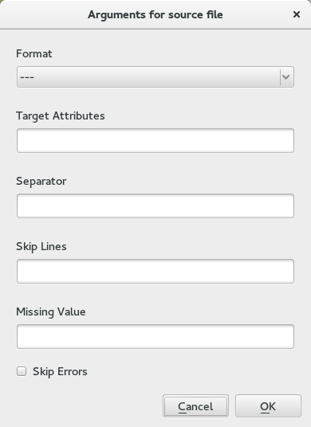 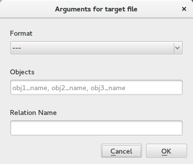
Progress bar dialogs
The progress bar dialog is displayed always if the program iterates through the source file. For some conversions is necessary to iterate through the source file twice. At the first interaction the program reads information about the source data (Prepare Data dialog) and at the second iteration converts the source data to the target data (Convert Data dialog). The iteration can be anytime stopped by the Cancel button.
Examples: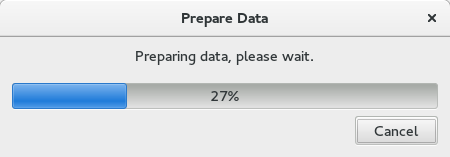
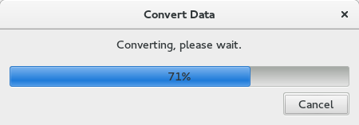
Warning/Error dialogs
The program produces Warnings and Errors. Warnings don't have to be critical and is possible to skip them if you are sure about what you do. Errors always stop an operation and provides detailed description, which can be shown/hidden by the Show/Hide button. All errors are listed here.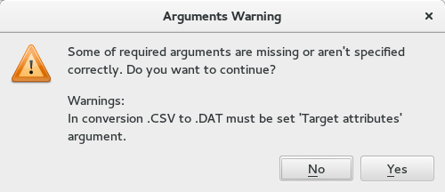
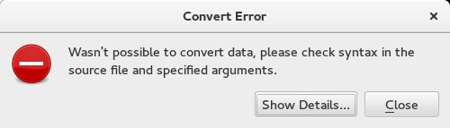
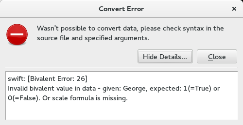
Find dialog
To find a value in the source/target data table press the shortcut: Ctrl+f.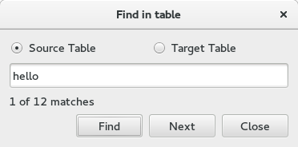
Original data dialog
The Original data dialog is possible to open by the Original data button. In the dialog are displayed an original source/target data such as they are written on the disk. You can find an expression in a displayed data using the Find bar at the bottom. The displayed data are read only.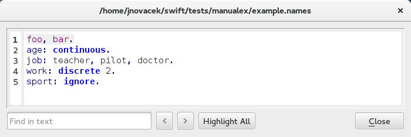
EXAMPLE
Conversion CSV (example.csv) to CXT (result.cxt)Main window
- Select the source file
- Show a preview of data.
- Open the source settings dialog and fill relevant arguments.
- Select the target file
- Open the target settings dialog and fill relevant arguments.
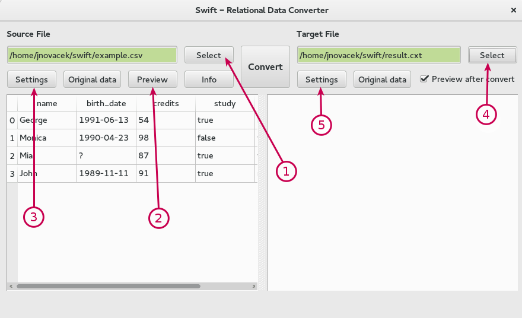
The source settings dialog
- Set the Target Attributes argument.
- Set the Missing Value argument.
- Confirm the form by click on the button OK.
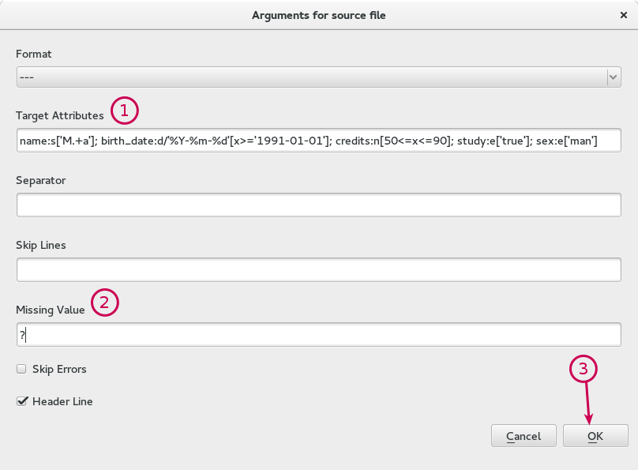
The target settings dialog
- Set the Objects argemnts.
- Confirm the form by click on the button OK.
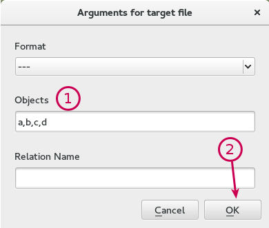
Finish
- Click on the Convert button.
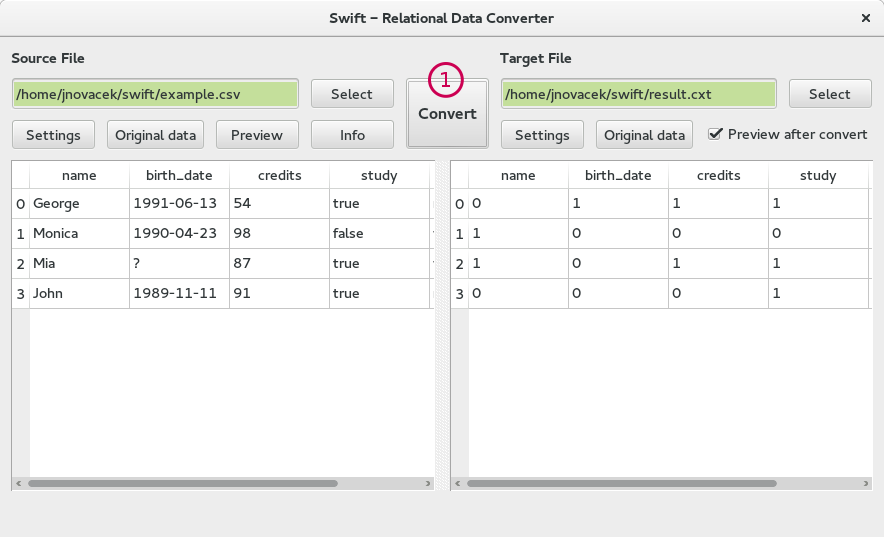
FEATURES
Copy data into the clipboard
If you select some data in a data table and press Ctrl+c, the selected data are copied into the clipboard.
Example: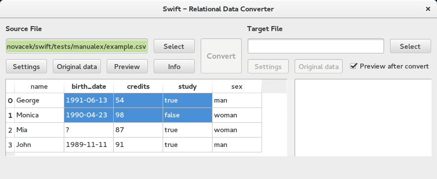
1991-06-13 54 true
1990-04-23 98 falseMore conversions at once
Each operation runs on the separate thread, so there is no problem to run next operation while the previous is still running.
Example: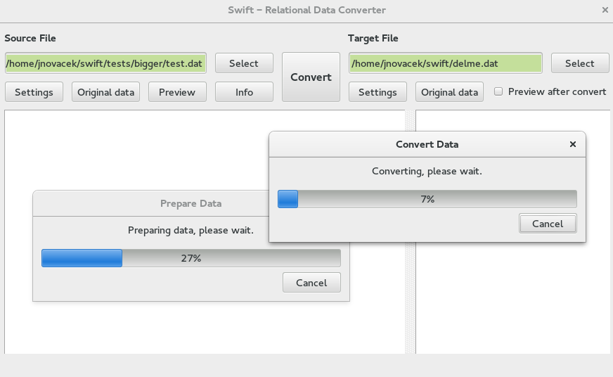